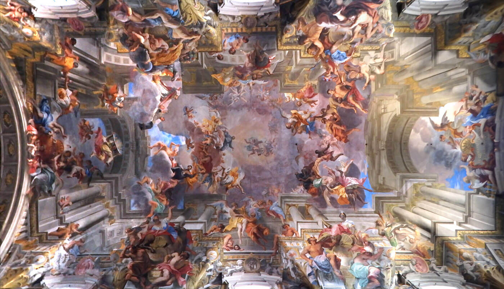

Gloria di Sant'Ignazio di Andrea Pozzo, dipinto dal 1691 al 1694 a Roma, è un affresco che celebra il Santo
attraverso la luce divina che investe il fondatore della Compagnia del Gesù.
Al centro della grande volta dipinta si trova il fondatore della compagnia del Gesù, Sant'Ignazio di Loyola. Gloria
di Sant'Ignazio è, in effetti, una vasta allegoria che ha l'intento di celebrare l'investitura da parte di Dio,
attraverso Cristo, del Santo e di tutti i membri della compagnia del Gesù. Così, la luce mistica, al centro, investe
il protagonista e, quindi, si irradia verso gli altri gesuiti. Da questi, poi, raggiunge i quattro continenti
conosciuti al tempo rappresentati a coppie sui lati lunghi dell'affresco.
L'Europa è rappresentata come una regina a cavallo che domina il globo azzurro. In senso orario, poi, l'America
è dipinta come una indiana, con un panno a forma di gonnellino e una corona di piume rosse e azzurre. Viene, quindi,
l'Africa, di colore scuro e, infine, l'Asia a cavallo di un cammello.
Sant'Ignazio è in alto, al centro su una grande nuvola chiara con intorno molte figure che aleggiano. Davanti
a lui si trova Cristo con in braccio una pesante croce. Dalle loro figure l'immagine si allontana, in alto,
con un volo di altri personaggi che si rimpiccioliscono progressivamente e si smarriscono nella lontananza.
La luce mistica che parte da Dio padre, mediata da Gesù, giunge al suo fondatore Ignazio di Loyola. Attraverso
il suo operato si trasferisce, poi, ai tanti membri della Compagnia che si recarono nelle terre lontane per
convertire popoli di altre culture. Le figure allegoriche dei quattro continenti rappresentano proprio la finalità
principale della Compagnia.
